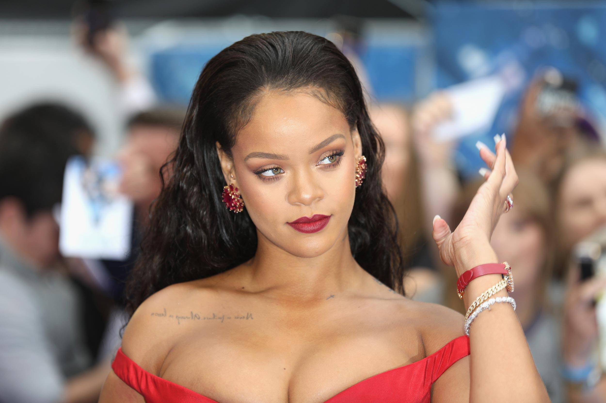

Robyn Rihanna Fenty, conocida simplemente como Rihanna, es una cantante, empresaria, diseñadora de moda, actriz, diplomática y filántropa barbadense. Es conocida por fusionar géneros caribeños con la música pop y por reinventar su imagen a través de los años.
Fecha de nacimiento: 20 de febrero de 1988 (edad 31 años), Parroquia de Saint Michael, Barbados
Estatura: 1,73 m
Residencia: Londres, reino unido
Nacionalidad: Barbadense
Robyn Rihanna Fenty (Bridgetown, Barbados, 20 de febrero de 1988), conocida simplemente como Rihanna, es una cantante, empresaria, diseñadora de moda, actriz, diplomática y filántropa barbadense.
Es conocida por fusionar géneros caribeños con la música pop y por reinventar su imagen a través de los años.
Comenzó su carrera en 2003 cuando hizo una audición para el productor musical Evan Rogers. Más tarde firmaría un contrato de seis álbumes con Def Jam. Adquirió fama mundial tras el lanzamiento de su tercer álbum de estudio, Good Girl Gone Bad (2007).
Posteriormente continuó expandiendo su discografía e incorporando nuevos géneros musicales con el lanzamineto de Loud (2010), Unapologetic (2012) y Anti (2016).
Muchas de sus canciones se encuentran entre los sencillos más vendidos del mundo, incluyendo éxitos internacionales como: «Unfaithful», «Umbrella», «Don't Stop the Music», «Disturbia», «Take a Bow», «Rude Boy», «Only Girl (In the World)», «We Found Love», «Diamonds», «Stay» y «Work».
Aparte de su trabajo en la música, Rihanna interpretó a la suboficial (GM2) Cora Raikes en la película Battleship, lanzada el 18 de mayo de 2012.143 La película esta basada en el juego de mesa Batalla naval.
Además de Rihanna, el reparto de Battleship esta compuesto por Taylor Kitsch, Brooklyn Decker, Liam Neeson y Alexander Skarsgård. Peter Berg fue el director y uno de los productores del filme. El rodaje fue en los Estados Unidos en las islas hawaianas de Maui y Oahu, así como en Sherman Oaks, California, para hacer una de las pocas escenas en un apartamento y en la Playa del Rey, California, donde filmaron una escena de un tiroteo
Protagonizó la película animada Home, junto a Jim Parsons, Steve Martin y Jennifer López.173 La película es una adaptación del libro de 2007, The True Meaning of Smekday, escrito por Adam Rex.
Su trabajo musical ha sido reconocido con numerosos Premios Grammy, Billboard Music Awards, Premios Brit, American Music Awards, entre otros.
Por ejemplo, en febrero de 2013 en los Premios Grammy, Rihanna ganó su sexto premio Grammy, en la categoría mejor video musical versión corta por «We Found Love»
1. Rihanna se estableció como una empresaria luego del lanzamiento de su propia línea de cósmeticos Fenty Beuty, en el 2017. Los productos generaron ingresos de más de 570 millones de dólares, mientras que la compañia está valorado en 3 billones de dólares.
Luego del éxito de sus productos de belleza, lanzó una línea de lencería llamada SavagexFenty. Además, en el 2019 estableció su primera casa de moda, Fenty, como parte de LVMH.
Los productos han recibido aclamo internacional, no solo por su éxito comercial, si no también por su inclusión y diversidad.6 Por su impacto en el mundo de la moda el Consejo de Diseñadores de Moda de América, le otorgó el «Premio Ícono».
Los shows y campañas de Savage X Fenty han sido desde el principio una inteligente celebración de la diversidad, contado con mujeres de todas las tallas, alturas, razas y culturas.
2. Rihanna creó y produjo la serie de televisión, Styled to Rock. Fue estrenada, en el Reino Unido, en agosto de 2012 en Sky Living. En la serie, doce concursantes compiten entre sí para crear el mejor traje para uno o más famosos cada semana.
Están restringidos por tiempo y materiales. Sus diseños son juzgados y el músico invitado de la semana elige su favorito. Un diseñador es eliminado cada semana.
Nicola Roberts, Lysa Cooper y Henry Holland fueron los jueces de la competencia. Styled to Rock consistió de diez episodios, con Rihanna haciendo una aparición especial en el último.
El 19 de agosto de 2012, apareció en el primer episodio de la segunda temporada del programa de televisión Oprah's Next Chapter.